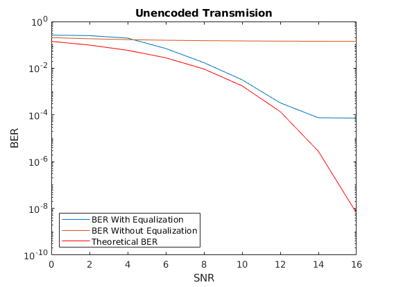
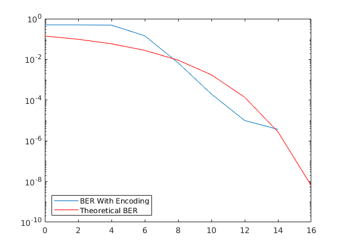

Contents
Comms Final Project Warmup
clear all;close all;clc
numIter = 1000;
nSym = 1000;
SNR_Vec = 0:2:16;
lenSNR = length(SNR_Vec);
nTrain = 100;
M = 16;
bpSym = log2(M);
chan = 1;
chan = [1 .2 .4];
Transmission With and Without Equalization
berVec = zeros(numIter, lenSNR);
berVecNoEQ = berVec;
parfor i = 1:numIter
eqlms = dfe(7, 3, rls(0.99, 1));
eqlms.SigConst = qammod(0:M-1,M,'UnitAveragePower',true);
eqlms.ResetBeforeFiltering = 0;
bits = randi([0 1], nSym*M, 1);
for j = 1:lenSNR
rdata = reshape(bits, bpSym, []);
sym = bi2de(rdata', 2);
tx = qammod(sym, M, 'InputType', 'integer', 'UnitAveragePower',true);
if isequal(chan,1)
txChan = tx;
else
txChan = filter(chan,1,tx);
end
txNoisy = awgn(txChan, SNR_Vec(j) + 10*log10(bpSym));
txEQ = equalize(eqlms, txNoisy, tx(1:nTrain));
rx = qamdemod(txEQ, M, 'UnitAveragePower', true);
rxMSG = de2bi(rx);
dataEQ = reshape(rxMSG', [], 1);
[~, berVec(i,j)] = biterr(dataEQ, bits);
rxNoEQ = qamdemod(txNoisy, M, 'UnitAveragePower', true);
rxMSGNoEQ = de2bi(rxNoEQ);
data = reshape(rxMSGNoEQ', [], 1);
[~, berVecNoEQ(i,j)] = biterr(data, bits);
end
end
ber = mean(berVec,1);
berNoEQ = mean(berVecNoEQ, 1);
semilogy(SNR_Vec, ber)
hold on;
semilogy(SNR_Vec, berNoEQ)
fprintf('Value of ber at SNR = 12: %d', ber(7))
berTheory = berawgn(SNR_Vec,'qam',M,'nondiff');
semilogy(SNR_Vec,berTheory,'r')
title('Unencoded Transmision');
xlabel('SNR');
ylabel('BER');
legend('BER With Equalization', 'BER Without Equalization', ...
'Theoretical BER', 'Location', 'southwest');
Starting parallel pool (parpool) using the 'local' profile ...
Connected to the parallel pool (number of workers: 6).
Value of ber at SNR = 12: 3.283750e-04

Transmission With Encoding
berVecE = zeros(numIter, lenSNR);
trellis12 = poly2trellis(5,[37 33], 37);
trellis23 = poly2trellis([5 4],[23 35 0; 0 5 13]);
parfor i = 1:numIter
bits = randi([0 1], 666*M, 1);
code = convenc(bits, trellis23);
eqlms = dfe(7, 3, rls(0.99, 1));
eqlms.SigConst = qammod(0:M-1,M,'UnitAveragePower',true);
eqlms.ResetBeforeFiltering = 0;
for j = 1:lenSNR
rdata = reshape(code, bpSym, []);
sym = bi2de(rdata', 2);
tx = qammod(sym, M, 'InputType', 'integer', 'UnitAveragePower',true);
if isequal(chan,1)
txChan = tx;
else
txChan = filter(chan,1,tx);
end
txNoisy = awgn(txChan, SNR_Vec(j) + 10*log10(bpSym));
txEQ = equalize(eqlms, txNoisy, tx(1:nTrain));
rx = qamdemod(txEQ, M, 'UnitAveragePower', true);
rxMSG = de2bi(rx);
dataEQ = reshape(rxMSG', [], 1);
decode = vitdec(dataEQ, trellis23, 34, 'trunc', 'hard');
[~, berVecE(i,j)] = biterr(decode, bits);
end
end
berEnc = mean(berVecE,1);
fprintf('Value of ber at SNR = 12: %d', berEnc(7))
figure;
semilogy(SNR_Vec, berEnc);
hold on
semilogy(SNR_Vec,berTheory,'r');
legend('BER With Encoding', 'Theoretical BER', 'Location', 'southwest')
Value of ber at SNR = 12: 9.947447e-06
